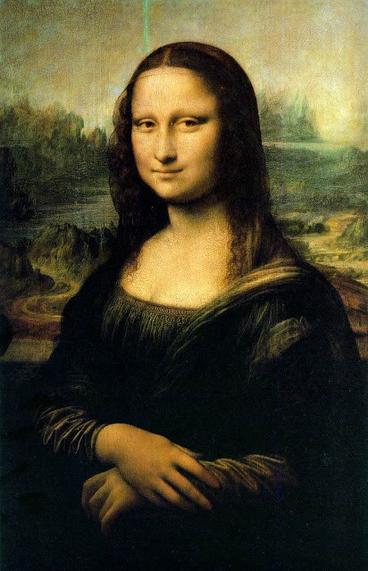
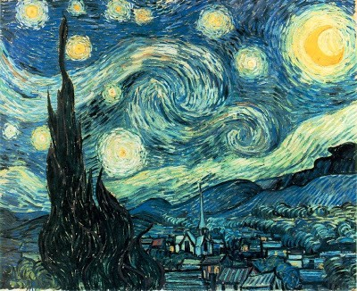
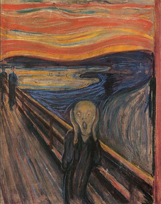
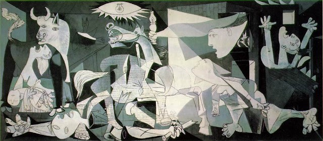

Contacto
tel.222-254796 LP
Profesor: Edgar Zenon Chipana
Cel. 72512345
Ninguna lista de las pinturas más famosas estaría completa sin la mención de la Mona Lisa de Leonardo da Vinci. Este infame retrato de Lisa del Giocondo fue completado en algún momento entre 1503 - 1519 y actualmente esta exhibida en el Museo del Louvre en París.
Vincent Van Gogh ha pintado un sinnúmero de conocidas piezas; sin embargo su pintura La Noche Estrellada es sobradamente considerada su opus magnum. Pintada en 1889, la pieza fue hecha desde la memoria y representa caprichosamente la vista desde su habitación del sanatorio donde residía en ese momento.
Usando óleo y pastel sobre cartón, Edvard Munch pintó su obra más famosa, El Grito, hacia 1893. Ofrece una figura fantasmal que se parece al anfitrión de Historias de la Cripta, el fondo de esta pintura expresionista se dice que es Oslo, Noruega.
Inspirado en el bombardeo de Guernica, España, durante la Guerra Civil española, Pablo Picasso completó su obra más famosa, en 1937. Esta obra fue originalmente encargada por el gobierno español e intentaba representar el sufrimiento de la guerra y finalmente presentarse como un símbolo de paz.
tel.222-254796 LP
http://www.unidadBol/sis.bo
Escuela de Arte La Palma de Madrid